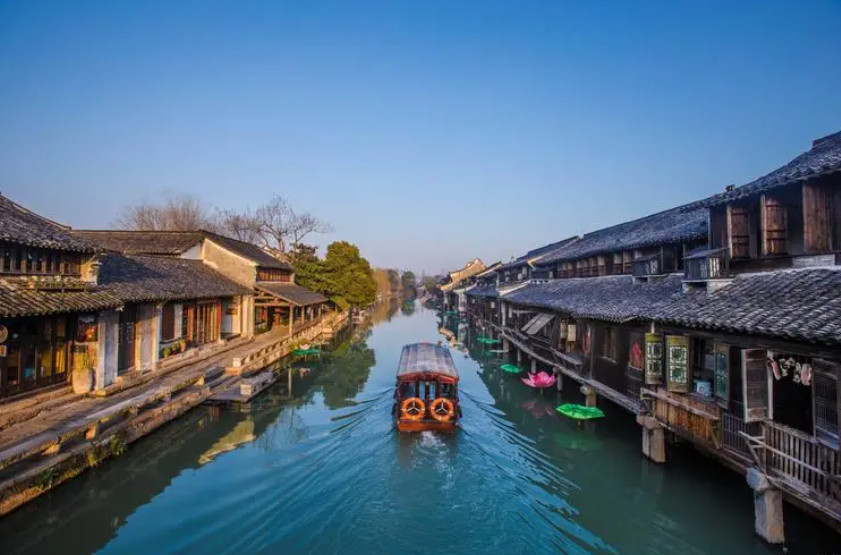
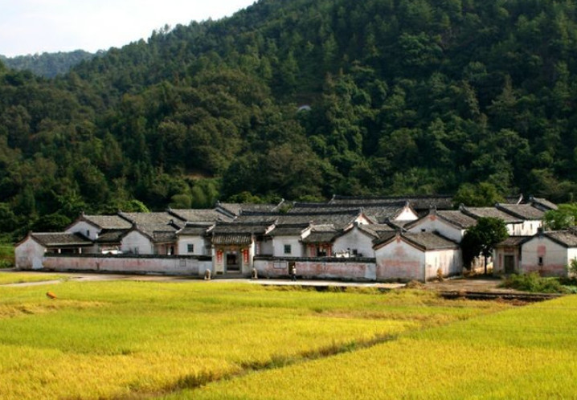
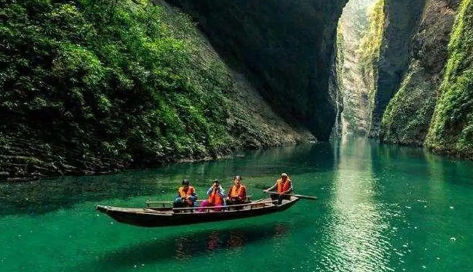

优秀地区
-

浙江乌镇
乌镇是中国著名的水乡古镇，通过乡村振兴战略的引导和支持，成功将传统的古镇转型为国际知名的旅游目的地。乌镇在保护传统建筑和文化遗产的基础上，积极发展乡村旅游、文化创意产业等，推动了当地经济的发展和居民收入的增加。
乡村旅游
文化产业
-

广东梅州市大埔县
大埔县通过发展特色农业和农村旅游，实现了农村经济的转型和农民收入的增加。该县以果蔬种植、茶叶产业、特色乡村旅游等为重点，通过打造农业品牌和提供优质的旅游服务，吸引了大量游客前来参观和消费，带动了当地经济的繁荣。
农村旅游
特色农业
-

湖北恩施土家族苗族自治州
恩施地区以土家族和苗族的独特文化和风景而著名，通过发展乡村旅游和特色农产品，成功实现了农村经济的振兴。恩施地区积极打造特色的民俗村落和生态景区，通过举办土家族苗族传统节日和展示当地特色文化，吸引了大量游客前来体验和消费。
乡村旅游
特色农产品
特色文化
-
四川乐山市峨眉山市
峨眉山以其壮丽的自然风光和佛教文化而闻名，通过发展乡村旅游和文化产业，实现了农村经济的转型和乡村居民收入的增加。峨眉山市通过改善旅游基础设施、提升旅游服务质量，吸引了大量游客前来观光和朝拜，带动了当地经济的快速发展。
佛教文化
自然风光
文化产业